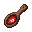
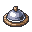

Allergen & exclusion correctness
the cell, opened — one promise ("a restricted user never sees a recipe that could hurt them") tasted at four stations, with the evidence on the table.
130unit filters · pass
4SAFE journey · pass
6deployed replay · on-demand
T−2hfreshest green
T−6dstalest green
 the four stations — every level of the same promise, freshest first
the four stations — every level of the same promise, freshest first

pytest exclusion suite — 130 teststest_recipes · test_postgres_parity · exact-token jsonb containment · NULL-guards (unrestricted recipes never vanish) · proven on SQLite AND real Postgres 16
130 PASST−2h
SAFE journey [R8] — 4 scenariosfish-allergic test user signs in · "Avisos de seguridad" fires · fish-bearing recipe absent from the live UI · PLAN.json phase 1's declared proof
4 PASST−1dapi-loop R8 replay — deployedmilk-exclusion asserted against staging-e2e over real network, real auth, real Postgres · run: [e2e:api-loop] push token
ON-DMDT−6dOpenAPI freeze — contract gaterestriction_codes cannot be renamed or removed; additive-only, checked offline at every commit
GATEeach committhe evidence table — living proof set (images resolve at view time; placeholders until a run — the doctrine)
01login — R8 userplaceholder · resolves live
02warning visible"Avisos de seguridad"
03recipe excludedlist without the fish dish
04filter panel staterestriction chip active
05API cross-checkexclusion in the response
▶flow captureMP4 — cursor visible
history — this cell, last 12 regenerations (from run-history.jsonl)
one bar per regeneration — height = tests in the cell, red = a failing run (2026-07-02: the D108 facet regression, caught by match-modes), amber = stale sources at regen time.
 go deeper — leaf reports, linked never rebuilt
go deeper — leaf reports, linked never rebuilt
coverage: services/recipes.py — line anchors ↗
playwright report — last api-loop run ↗
spec source: web-journey-*.spec.ts ↗
proof manifest.json ↗
ticker: ✓ promise held at 3 of 4 stations today · ⚠ deployed replay 6 days old — run [e2e:api-loop] to refresh